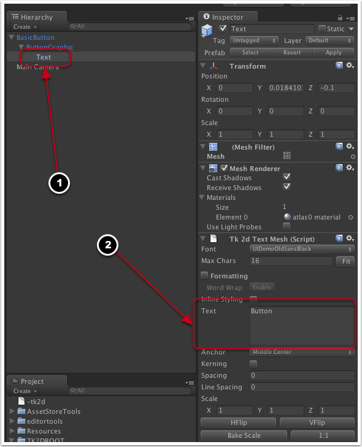
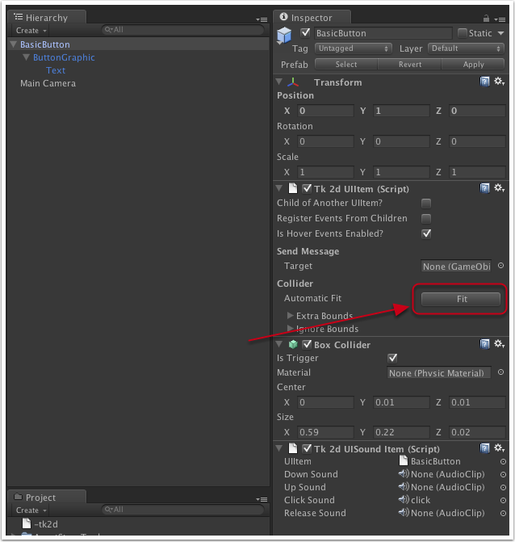
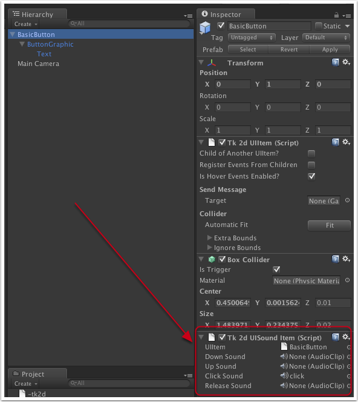

Documentation
Script Reference
Forum
Documentation
Script Reference
Forum
Follow instructions in 'Setting up UI' tutorial.
Click on BasicButton object in the Hierarchy Window
To change text, in the Hierarchy drill down under BasicButton, then under ButtonGraphic to find Text.
Select Text GameObject in the Hierarchy. Edit the 'Text' field in the 'Tk 2d TextMesh' in the inspector.

To change button size or graphics - Select ButtonGraphic in the Hierarchy (child of BasicButton). Edit the sprite in 'Tk 2d Sliced Sprite' and/or change the Dimensions (Pixel Units) to change the width and height.
Once you have changed the size of the graphics, you are likely to want the collider on the button to fit. Select the "BasicButton" object, and click on the Collider > Automatic Fit > Fit button as shown below. This will automatically fit the collider on the button to the sprites / text.

You can fix colliders on multiple items or hierarchy of UI elements at a time by selecting the root object and invoking the "2D Toolkit > UI > Fix Selected Item Bounds". This will fix all selected UI items and their children.
To change the sound click on 'BasicButton' in the Hierarchy and in the inspector there is a 'Tk 2d Sound Button'. You can added/remove/change audio clips here.

You are free to customize the button in any way you like - you can add multiple sprites, use clipped sprites, change collider types, etc. Check the other button prefab types for other things that can be built with this basic building block.